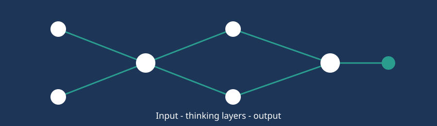

Welcome: AI at Work

Why I picked this topic
A year ago I only knew AI from movies. Now I use it for study notes, translations and even debugging my own code. So I wanted to find out what is really going on behind the chat box, and how it changes the way people work.
This site is my little guide. It is written for students and fresh graduates who want to understand AI without the heavy jargon.
Quick overview
Artificial Intelligence (AI) means computers doing tasks that normally need human thinking, like understanding language, spotting patterns or making predictions. Here is where to go next: